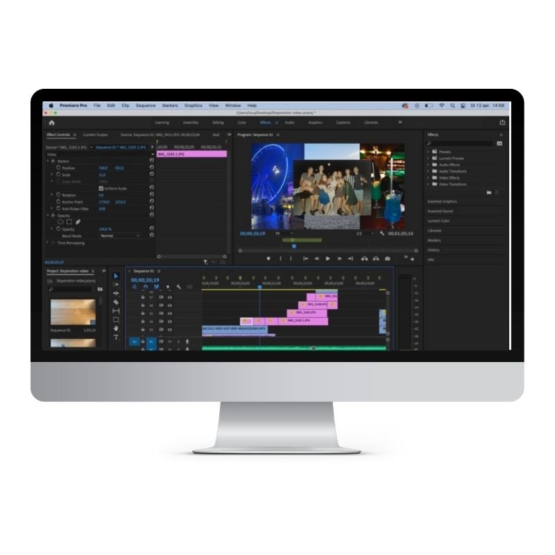

Het passieproject
Dit project heb ik gemaakt in een groepje van 3 personen. Ons doel was om ieder zijn passies te mengen tot een unieke video, dat bestaat uit foto’s, muziek en editing. Kort gezegd hebben wij een stop motion video maken met video’s en foto’s van ons waarin onze passie naar voren komt. Deze stop motion video kan worden gezien als een soort introductie video van ons (denk aan een openingsfilmpje van een serie).
Tijdens dit project heb ik veel nieuwe dingen geleerd, een groot deel daarvan was editen met premiere pro. Sindsdien gebruik ik het steeds meer en meer. Hieronder is de video te zien. Veel kijkplezier!